Navigation (secondary)
Style
Themes
The secondary navigation is used on a variety of pages so it requires a variety of themes. The goal for the secondary navigation is to blend in with its surroundings in order to avoid clashing or competing with other important components.
Choosing a theme
When thinking about choosing a theme, consider the goal of the page as well as what the design is or will be. Ideally, the chosen theme matches the rest of the page design while providing a seamless browsing experience.
Theme options
The light theme features a light gray background and a drop shadow, it is best used on pages with a lighter look and feel. The drop shadow is always visible unless covered by an expandable tray.
The dark theme features a dark gray background and a thin gray line, it is best used on pages with a darker look and feel. The thin gray line is always visible unless covered by an expandable tray.
Product name text styling
If the secondary navigation is used to connect product-like pages, Zone 1 should display the product name in the form of linked text instead of the logo.
Warning
Various styling treatments were explored for the product name text, do not deviate from any of these styles.
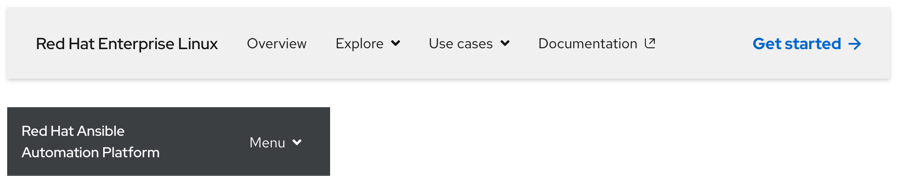
| Breakpoint | Style |
|---|---|
| Large breakpoints | Red Hat Display, Medium / 18px, 27 (1.5 line height) |
| Small breakpoints | Red Hat Display, Medium / 16px, 24 (1.5 line height) |
Navigation text styles
Navigation text styles have the same styling across all themes like font family, size, and line height. However, the color will change between black and white depending on the chosen theme.
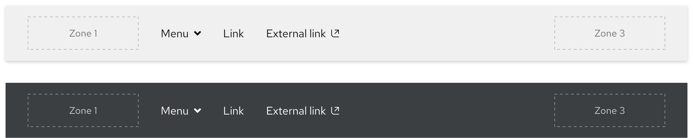
Expandable tray
If content in Zone 2 includes a menu and when that menu text is selected, an expandable tray will appear. It is divided into three parts and is styled the same across all themes.
- Tab - Visually indicates what menu is expanded
- Tray - The area where content or other components can be placed
- Overlay - A transparent background that helps elevate the component above the page underneath
Helpful tip
When a menu is expanded, the arrow icon next to the menu text will flip to point up.
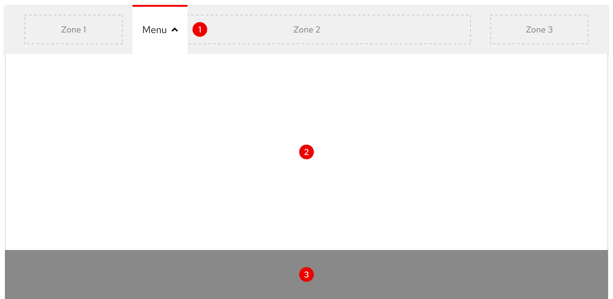
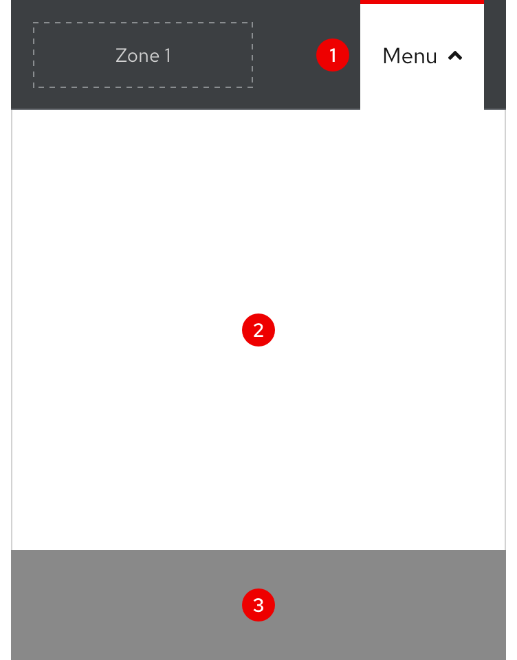
Layout
The secondary navigation spans the entire width of the browser window on all breakpoints
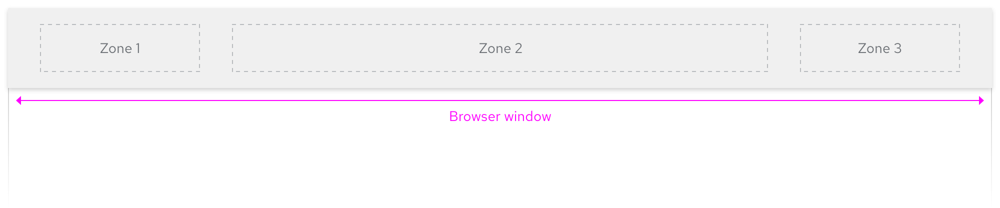
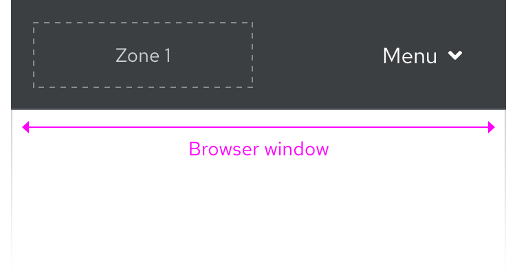
Left-to-right languages
When content is translated to other left-to-right languages, the layout and text size remains the same.
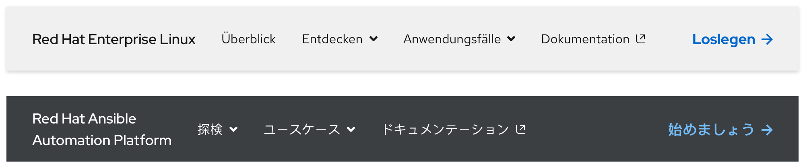
Right-to-left languages
When content is translated to a right-to-left language like Hebrew, the text size will increase which makes it easier to understand visual subtleties of unique characters
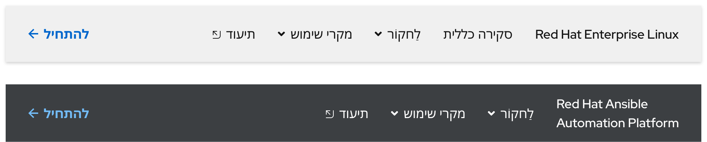
Responsive Design
Large breakpoints
The secondary navigation includes Zones 1, 2, and 3 on large breakpoints. The content in the expandable tray is also visible.
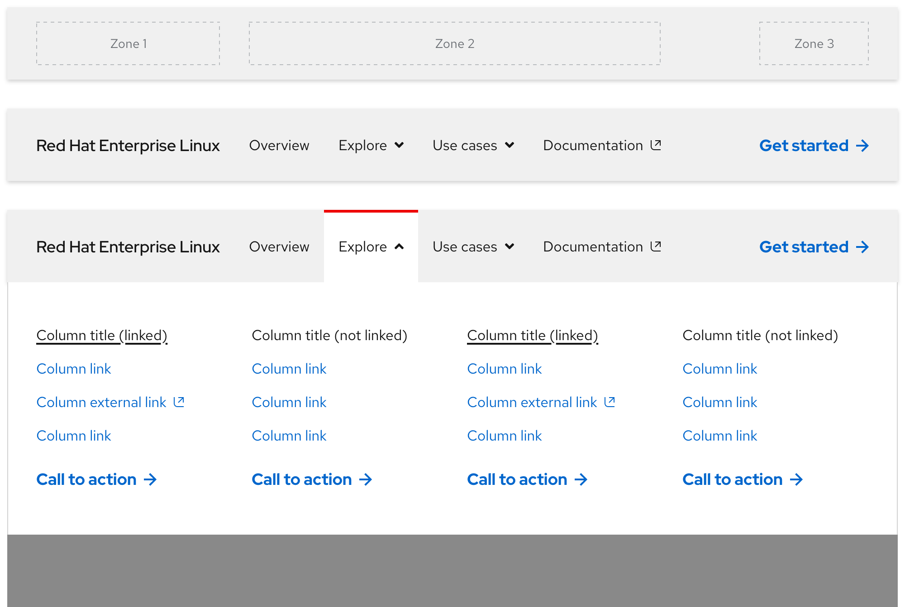
Small breakpoints
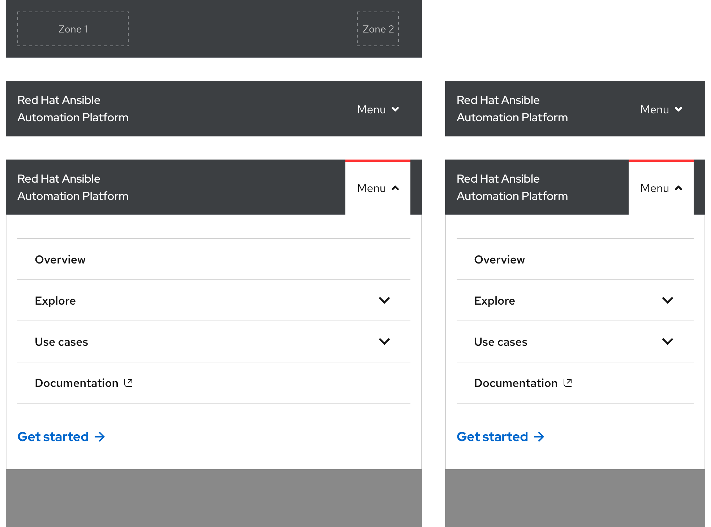
Spacing
The secondary navigation uses spacers to define space values between elements.
Extra large breakpoints
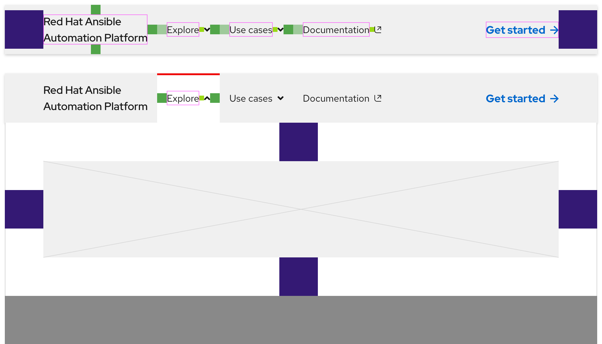
Large breakpoints
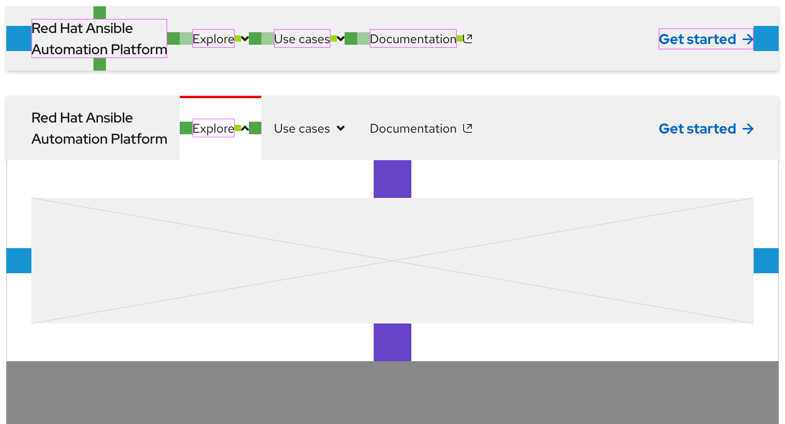
Small breakpoints
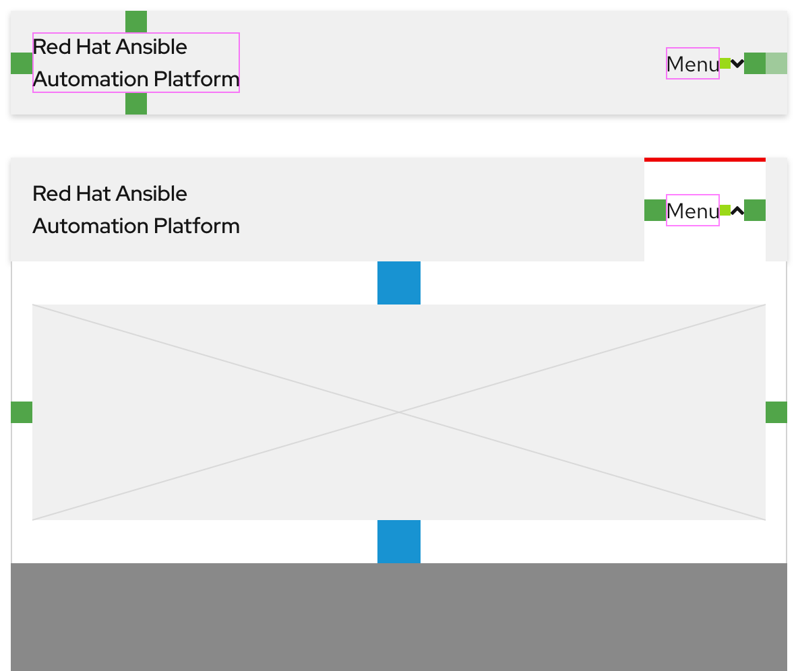
Related elements or patterns
Feedback
To give feedback about anything on this page, contact us.
Red Hat legal and privacy links
- About Red Hat
- Jobs
- Events
- Locations
- Contact Red Hat
- Red Hat Blog
- Diversity, equity, and inclusion
- Cool Stuff Store
- Red Hat Summit
Red Hat legal and privacy links